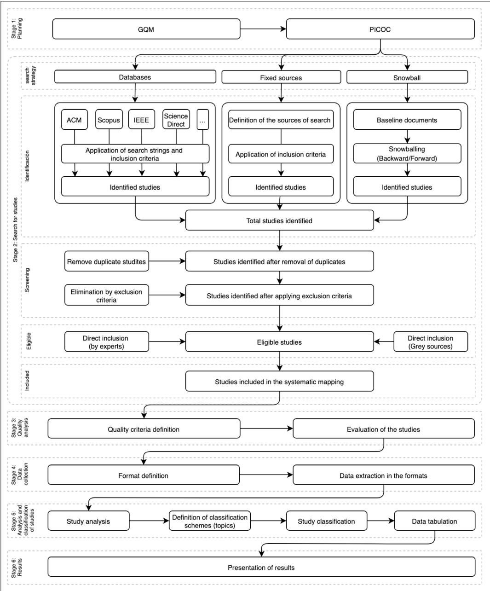
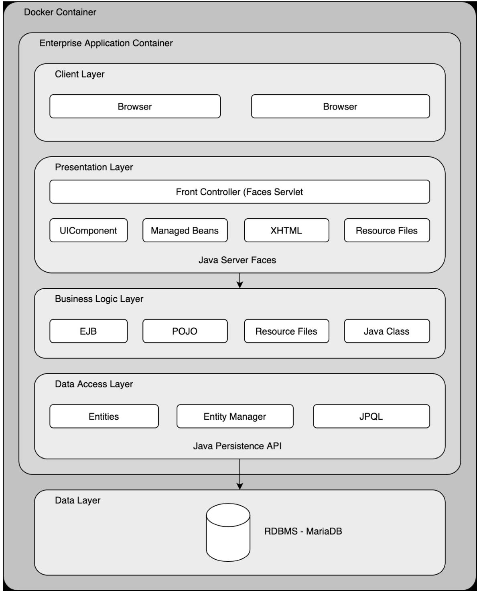
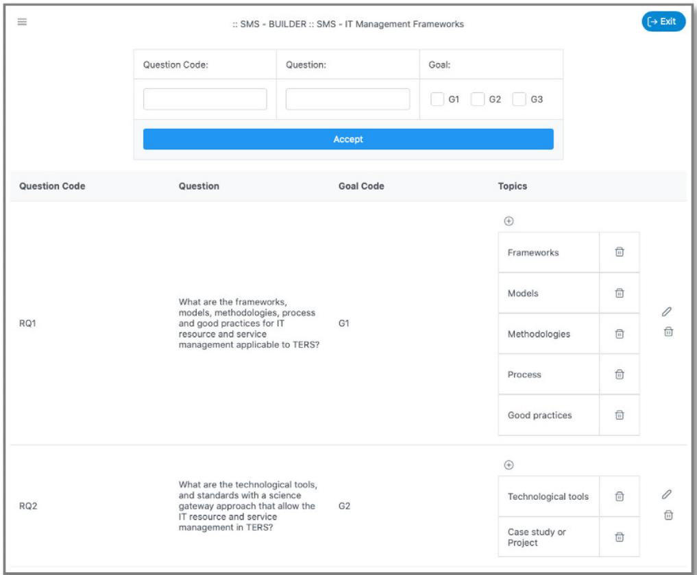
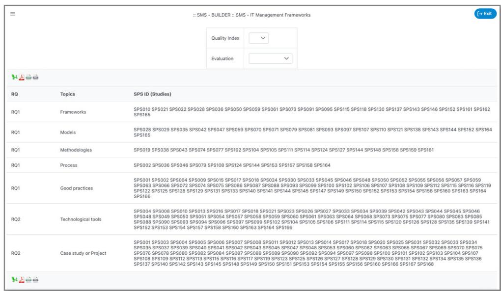
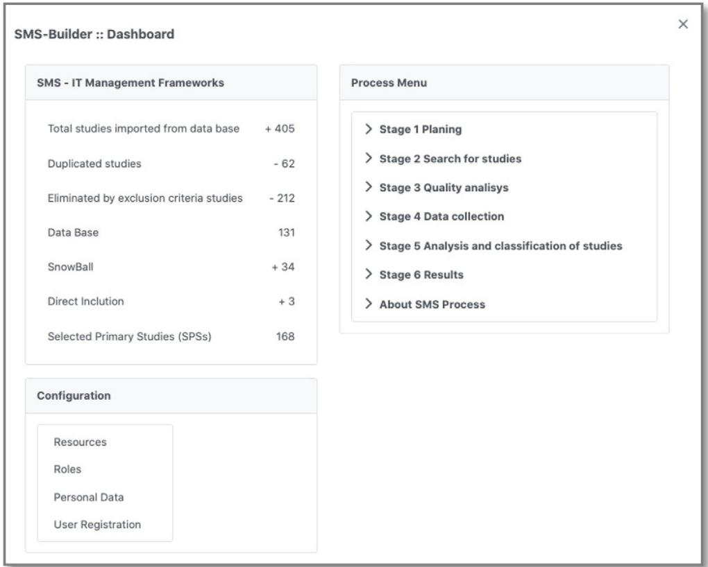
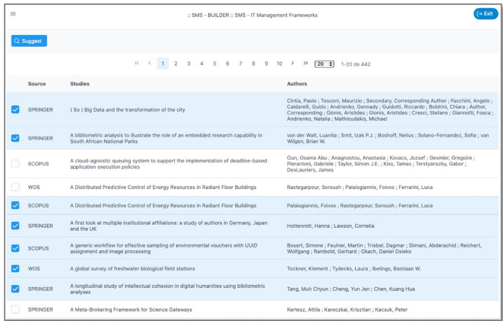
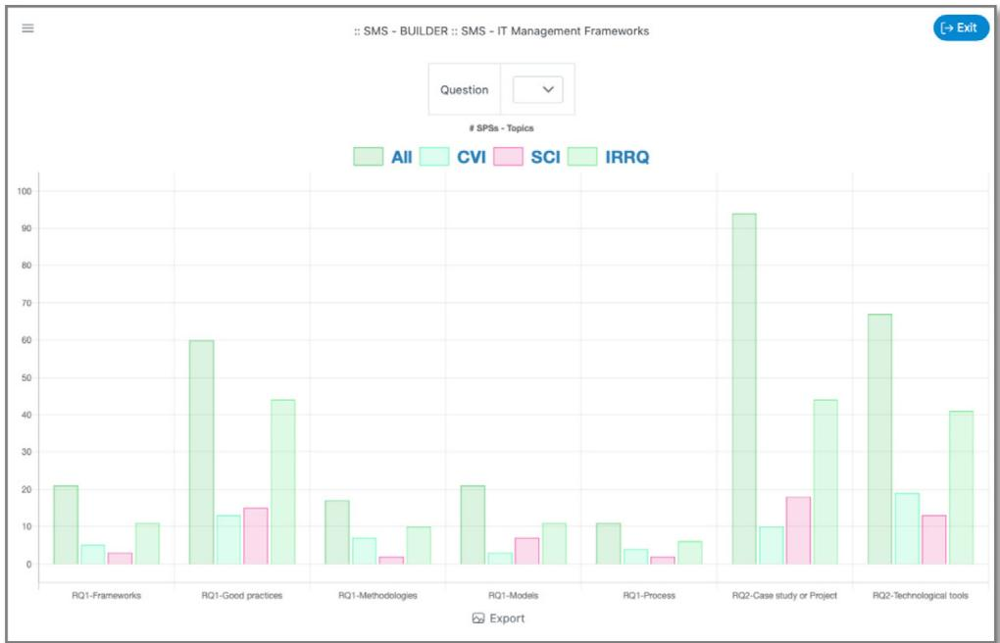
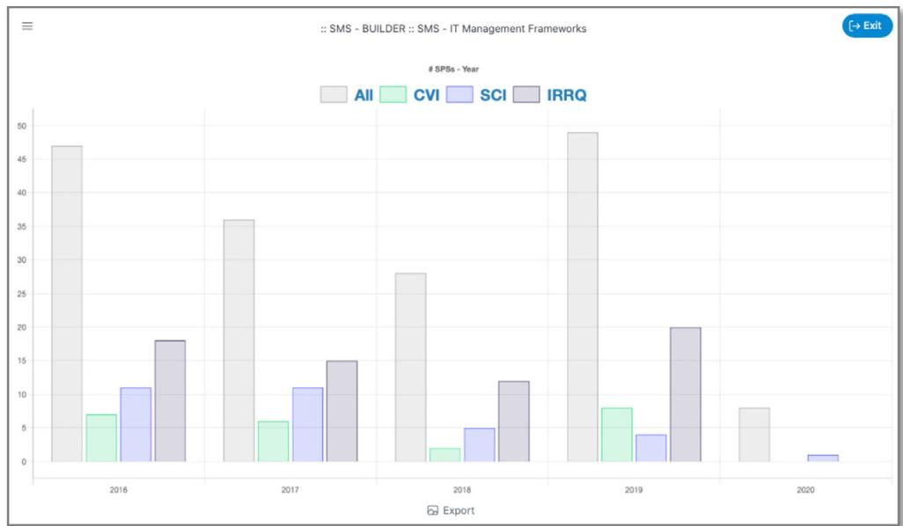

Original software publication
SMS-Builder: An adaptive software tool for building systematic mapping studies¶

Christian A. Candela-Uribe a,b,∗, Luis E. Sepúlveda-Rodríguez a,b, Julio C. Chavarro-Porras b, John A. Sanabria-Ordoñez c, José Luis Garrido d, Carlos Rodríguez-Domínguez d, Gabriel Guerrero-Contreras e
a Technological University of Pereira, Colombia
b University of Quindío, Colombia
c University of Valle, Colombia
d University of Granada, Spain
e University of Cádiz, Spain
a r t i c l e i n f o¶
Article history: Received 27 April 2021 Received in revised form 21 September 2021 Accepted 1 December 2021
Keywords: Systematic literature review Systematic mapping study Empirical software engineering
a b s t r a c t¶
A Systematic Mapping Study is an instrument frequently used to carry out a search process, identifi cation, and classification of studies in different fields. Researchers in front of this type of process have a challenge while managing the data about these studies. This paper presents a software tool that has been created to help those who need to build a systematic mapping study. In addition, this work follows the evidence-based software engineering approach and extends it through a software tool by including different ways of adapting this process.
© 2021 The Author(s). Published by Elsevier B.V. This is an open access article under the CC BY license (http://creativecommons.org/licenses/by/4.0/).
Code metadata¶
Current code version Permanent link to code/repository used for this code version Code Ocean compute capsule Legal Code License Code versioning system used Software code languages, tools, and services used Compilation requirements, operating environments & dependencies
Software metadata¶
| Current software version | 2.1 |
| Permanent link to executables of this version | https://hub.docker.com/r/griduq/sms-builder |
| Legal Software License | GPL 3.0 |
| Computing platforms/Operating Systems | Multi-platform through Docker (linux + web application) |
| Installation requirements & dependencies | |
| If available, link to user manual - if formally published include a reference to the publication in the reference list | https://hub.docker.com/r/griduq/sms-builder |
| Support email for questions | christian.candela@upt.edu.co |
1. Introduction¶
The amount of scientific documents exceeds the capacity of readers to identify them. Thus, it is crucial to have protocols and tools for locating information to help us identify gaps, challenges, and other relevant aspects of our researches. In this context, Systematic Literature Review (SLR) helps reducing time in locating studies and favors decision making since the information presented by a literature review must be relevant, accessible, updated, and high-quality [1]. In general, SLRs have been marked by the evidence-based practice movement to minimize bias through the use of a specific research protocol [2].
There is also a movement in software engineering that seeks to use evidence-based research and thus brings in good practices in medicine to create systematic review studies. Such is the case of the work proposed by Kitchenham et al. [3] for the formalization of the concept of Evidence-based software engineering (EBSE), which supported the development of other important works like [2,4–7], and [8]. Consider that the Systematic Mapping Studies (SMS) is a kind of SRL widely accepted in software engineering. Therefore, it is important and necessary to define and follow processes that lead to the practical building of SMSs [9]. A SMS is an instrument frequently used to carry out a search, identification, and classification of studies in different fields. The Artificial Intelligence Research Group (AIRG) at the Technological University of Pereira in Colombia, extended and adapted a process for building SMSs with the evidence-based software engineering approach, based on the work in [3,7]. The stages that make up the process proposed by AIRG for building a SMS correspond to (1) Planning, (2) Study search, (3) Quality analysis, (4) Data collection, (5) Study analysis and classification, and (6) Results (see Section 1.1). These stages represent the combination of various aspects described mainly in [3,7], and the work of [8,10], which are shown in detail in Fig. 1. In this regard, AIRG identified the need to create a specialized software to support the SMS building process. This situation prompted the creation of the SMS-Builder software tool. We built this software intending to automate the process of making a SMS adaptively. This software tool provides support for several tasks:
a. Managing references.
b. Supporting the selection and classification of studies.
c. Helping the automated evaluation of studies.
d. Preparation of statistical reports about the studies selected.
1.1. Process for building a SMS¶
This section describes the six stages of the SMS building process shown in Fig. 1.
1.1.1. Stage 1: Planning¶
This stage consists of establishing the overall purpose to be achieved with the SMS. Planning includes setting aspects such as Goal(s), Research Question(s), and Metrics. For these aspects, the process followed the GQM (Goal/Question/Metric) model [11,12]; this model establishes the conceptual, operational, and quantitative level, respectively.
1.1.2. Stage 2: Search for studies¶
This stage supports the identification of studies to add to the SMS. The search for studies comprises of aspects such as (1) Determining the strategy, either independently or combined; (2) General identification of studies; (3) Screening; and (4) Study selection to be included in the SMS.
1.1.3. Stage 3: Quality analysis¶
This stage consists of defining and applying quality criteria to the studies included in the SMS. The process suggests determining criteria that have been used widely as accepted references in the field of study to which the SMS is being applied. Particularly, we consider three quality indices for the study evaluation, which are reducing bias in the SMS.
CVI: This index makes it possible to judge the documents by identifying those most relevant to the SMS goals. The CVI index uses a quantitative scale of six levels from 0 to 5, in which zero implies a low relationship of the studies with the SMS objectives, and five means a high relationship of the studies with the SMS objectives [13,14].
SCI: The Study Citation Index considers the number of citations for each study regarding the publications’ age. This index lets us evaluate the impact study by a metric accepted in the scientific community. In this index, we seek to balance the citation of the studies. Thus, a citation in a recent paper has a higher value than in an old paper. See formula (1).
$$ S C I = \frac {C}{Y}\tag{1} $$
C is the number of Citations in the period of time, and Y is the number of years since its publication.
Additionally, this index uses frequency analysis to identify the most relevant studies
IRRQ: This corresponds to the ‘‘Index of Relationship to Research Questions’’, see formula (2).
$$ I R R Q = \frac {N}{T}\tag{2} $$
N corresponds to the Number of RQs to which the study is related. T is the total of RQs.
1.1.4. Stage 4: Data collection¶
This stage consists of designing and filling out the forms to obtain data and metadata from the SMS studies.
1.1.5. Stage 5: Analysis and classification of studies¶
According to the metrics defined in the Planning Stage, this stage analyzes studies selected in the SMS to search for answers to the RQs.
1.1.6. Stage 6: Results¶
This stage presents values collected from the SMS. It also provides the reader with a systematic way of approaching a particular topic by pointing out the specific studies about topics and other planning elements. If necessary, it is possible to include a meta-analysis as suggested by [2].
2. Software description¶
This section describes information about the software architecture and functionalities of SMS-Builder.
2.1. Software architecture¶
SMS-Builder is a web application built with the Java 11 programming language. This software implements the Layers Architectural Pattern using five levels: Data Layer, Data Access Layer, Business Layer, Presentation Layer, and Client Layer.
• The Data Layer is responsible for storing information through the RDBMS Maria DB.

Fig. 1. The process proposed by AIRG for building a SMS.
• The Data Access Layer manages the flow of information between the Data Layer and the Business Layer. The Data Access Layer uses JAVA’s ORM (Object Relation Mapping) called JPA (Java Persistence API).
• The Business Layer contains Business Classes and EJB (Enterprise Java Beans), exposing functionalities towards the Presentation Layer. The Business Classes fulfill specific tasks of the application logic, such as the import of references.
• The Presentation Layer is responsible for providing the server-side web components that allow access to Business Layer’s functions. The Presentation Layer uses the Java Server Faces, a framework extended by the PrimeFaces set of features.
• The Client Layer is responsible for the execution of the web components provided by the Presentation Layer. The Client Layer constitutes a Graphical User Interface (GUI) that allows users to interact with the application. This layer consists of web pages that enable access to the application (Fig. 2).
As a complement, the application architecture uses the following set of tools. Maven supports project structuring, and dependency management [15] and GIT provides version control and change management at URL https://github.com/grid-uq/smsbuilder [16]. To facilitate the reproduction and study of the results obtained in each SMS managed by the application, we have encapsulated the software execution environment using Containers.
2.2. Software functionalitie¶
SMS-Builder was built as an adaptable software tool to help researchers follow a SMS building process. A relevant feature of the software is its ability to adapt according to the initial configuration. This feature is essential, since a SMS is not the result of a rigid process. The process may vary according to the area of study and the particular needs of researchers. The adaptability of the software is reflected in the following actions:

Fig. 2. Software architecture.
• Definition of goals, research questions, and topics related to each other, affecting statistical reports.
• Classification of studies according to set topics.
• Evaluation of studies based on customized quality indexes.
• Management of access to the application through the configuration of users, roles, and privileges.
Some of the main functionalities of the software are shown below and are classified according to the stage of the process for building a SMS.
• Software functionalities to the stage 1: Planning
These software functions make it possible to define fundamental aspects to develop the SMS according to its process. It starts with the name and description of the mapping. It continues with the specification of one or more goals. Subsequently, one or several research questions must be chosen, as the case may be, which must be related to the previously established goals. Next, the user needs to define the topics related to each research question.
• Software functionalities to the stage 2: Search for Studies – Import references: The software allows importing references using Research Information System (RIS) formatted files. To this end, the software requires that the search process be performed externally, either through automated (database search), or using manual methods (direct inclusion and snowball search). The user needs to refine the references obtained to complete the metadata through a reference manager such as EndNote or Mendeley. This information is the main component needed to start the building process in SMS-Builder.
– Remove Duplicate: This function allows users to identify duplicate references that may have been indexed simultaneously in different databases.
– Screening: The software provides a GUI that helps users to visualize the references so as to refine the results of the automated search provided by the databases. Additionally, it is possible to add text notes and establish the citation relevance for each study (value used in the CVI calculation).
• Software functionalities to the stage 3: Quality Analysis¶
– Quality evaluation: By default, the software uses the CVI, SCI, and IRRQ indices to evaluate the quality of the studies. However, the user can add other customs indices.
– Metadata complement: Through this function, the software allows users to establish or update the year of publication, the number of citations, and the value relevance to calculate the SCI and CVI index.
• Software functionalities to the stage 4: Data Collection¶
When building a SMS, the data collection stage requires time. The researcher needs to manage the information (capture, update, complement, and transfer) contained in the studies. This situation leads to errors in the SMSs. Therefore, SMS-Builder makes a significant contribution in automating the management of study metadata to support data collection.
– Search SPSs: Through this function, SMS-Builder allows users to find SPSs using metadata study information.
• Software functionalities to the stage 5: Analysis and Classification of Studies
– Classify studies by topic: This function facilitates the relationship between the analyzed studies and the topics specified in the SMS Planning Stage.
• Software functionalities to the stage 6: Results
– Export data: The software allows users to export data tables to formats such as XLSX, PDF, CSV, XML, and images to formats like JPG.
– Generation of statistical charts: The software generates statistical data and charts related to the studies and the stored information.
3. Illustrative examples¶
This section shows some of the functionalities of the SMS-Builder software using a SMS building example. The example is related to the identification of Science Gateway frameworks, and it uses a combined search strategy between Database, Snowballing, and Inclusion Direct.
Table 1
Imported studies.
| Search strategy | Studies |
| Database | 405 |
| Snowball | 34 |
| Direct Inclusion | 3 |
| Total studies | 442 |
Table 2
Debuging activities.
| Debuging activities | Studies |
| Total imported studies | +442 |
| Removed by Duplicate | -62 |
| Descarted by Screening | -212 |
| Selected Primary Studies | 168 |
3.1. SMS building example¶
The software supported different steps in the SMS building process, refining the studies as follows:
3.1.1. Example stage 1: Planning¶
The following SMS components were defined in this example:
• Two Goals (G1 and G2)
• Two Research Questions (RQ1 and RQ2)
• Five Topics for RQ1
• Two Topics for RQ2
These elements were registered in the software using different interfaces like Fig. 3.
3.1.2. Example stage 2: Search for studies¶
In this example 442 studies were obtained through the import functionality (Table 1).
SMS-Builder provides support for debugging studies through the ‘‘Removed Duplicated’’ and ‘‘Screening’’ functionalities. See the results of the debugging in the example, in Table 2.
3.1.3. Example stage 3: Quality analysis¶
The evaluation functionality allowed the automatic evaluation of the indices (CVI, CSI, and IRRQ).
3.1.4. Example stage 4: Data collection¶
In this example uses several SMS-Builder functionalities to minimize the work required by researchers. It starts with Screening which obtains relevant elements of each study and ends with the Analysis and Classification of Studies. There is another interface that allows users to filter SPSs using metadata study information.
3.1.5. Example stage 5: Analysis and classification of studie¶
SMS-Builder provides interfaces for the analysis and classification of studies using topics defined in the Planning Stage. Additionally, there are interfaces to see summary information regarding the analysis and classification of studies (Fig. 4).
3.1.6. Example stage 6: Results¶
All information processed by SMS-Builder is shown through several statistical interfaces such as the SPSs by Topics by

Fig. 3. Stage 1.

Fig. 4. Classification of studies table.
Quality Indices screen and SPSs by Year screen, among others (see Section 3.4).
3.2. Summary screen¶
This function displays consolidated information about the SMS in progress. The summary includes the total number of studies analyzed, the studies excluded by multiple indexing, the sum of studies selected, and different research strategies such as Database, Snowballing, and Direct Included (Fig. 5).
3.3. Remove duplicate screen¶
This functionality allows users to identify duplicate studies. These duplicates were generated because of the multiple indexing process (Fig. 6).

Fig. 5. Review summary.

Fig. 6. Remove duplicate.
3.4. Statistical data¶
The software provides a set of information to perform statistical data analysis about the Selected Primary Studies (SPSs), including:
• Data table with the ratio of SPSs to RQs.
• Data table with the relationship of SPSs to Topics.
• Data table and a bar chart showing the number of SPSs per Year and Quality Index.
• Data table with a bar and a pie chart showing the number of SPSs by Publication Type.
• Bar and pie chart, and a data table with information to display SPSs according to the Search Strategy.
• Data table with a bar and pie chart showing SPSs by Topics.

Fig. 7. SPSs by topics by Quality Indices chart.
• Data table and a bar chart showing SPSs by Topics and by Quality Indices.
• Data table with a bar and pie chart showing SPSs per RQs.
• Data table with a bar and pie chart showing the average Quality Indices by Year.
• Data table and Word Cloud chart. The Word Cloud highlights the keywords with the highest frequency in the SPSs.
In the following Sections 3.4.1 and 3.4.2 the aforementioned example shows two statistical interfaces available in the software:
3.4.1. SPSs by topics by quality indices screen¶
This interface includes a chart with a cross-analysis among SPSs, Topics, RQs, and Quality Indices (CVI, SCI, and IRRQ), see Figs. 7 and 8. In this example, the SMS indicated the following:
• With reference to RQ1, the topic ‘‘Process’’ registered the lowest number with 11 SPSs equivalent to 6.55% of the 168 SPSs. In contrast, the topic ‘‘Good practice’’ registered the highest number, with 60 SPSs, equivalent to 35.71%.
• In the case of RQ2, the topics ‘‘Technological tool’’ and ‘‘Case study or project’’ achieved a significant number, with 67 and 94 SPSs equivalent to 39.88% and 55.95%, respectively.
3.4.2. SPSs by year screen¶
This interface includes a chart with cross analysis among SPSs, publication year, and Quality Indices (CVI, SCI, and IRRQ) screen (Figs. 9 and 10). This example shows a decrease in the number of studies published since 2017, dropping from 47 SPSs published in 2016 to 28 SPSs published in 2018. In contrast, by 2019, there is an increase in 2016 with a total of 49 SPSs. According to the SCI index, the SMS presented the largest number of SPSs in the most representative quartile from 2016 to 2017. Regarding the CVI index, the SMS shows a regular number of SPSs per Year, except for 2018 and 2020. Considering the IRRQ index, the SMS indicates that no SPSs are recorded for 2020, perhaps because this study only considers the first quarter of the year.
4. Impact¶
This software tool aims to contribute to the research processes that involve the building of a SMS. The software tool reduces time, human error, and bias. As a result, SMS-Builder unifies and automates mapping information management and enables researchers to concentrate their efforts on analyzing information about SMSs. Furthermore, data management automation in SMS helps to reduce human error. SMS-Builder also reduces bias in SMSs through the use of indexes for quality assessment. This software tool provides three quality indices by default and allows additional quality indices at researchers’ discretion.
SMS-Builder was created through international cooperation with five universities, three of them from Colombia (the Technological University of Pereira, the University of Quindío, and the University of Valle), and two from Spain (the University of Granada, and the University of Cádiz). Furthermore, in these same universities, we have begun an empirical evaluation with several postgraduate students, who have used SMS-Builder building their SMSs as shown in Table 3.
As a result of the empirical evaluation, feedback was obtained that allowed improving SMS-Builder in aspects such as:
• Lastest version (3.0.2021.09.14)
– Functionality was improved to customize the steps of the process for SMS construction.
– The classification structure by year was improved, including the classification by year.
– Improved the interface to remove duplicates.
– Statistical data was supplemented.
– Registration of search strings
• Next version:¶
– Bibtex format support for importing references.
– Customization of the digital databases to be used.
– Inclusion of SPS links to the destination indicated in the reference.
– Adding support for data collection template.
– Support for eligibility criteria during screening – Support for the application of the CVC content validity coefficient to mitigate bias.
| # SPSs - Topics | ||||
| Topics | All | CVI | SCI | IRRQ |
| RQ1-Frameworks | 21.0 | 5.0 | 3.0 | 11.0 |
| RQ1-Good practices | 60.0 | 13.0 | 15.0 | 44.0 |
| RQ1-Methodologies | 17.0 | 7.0 | 2.0 | 10.0 |
| RQ1-Models | 21.0 | 3.0 | 7.0 | 11.0 |
| RQ1-Process | 11.0 | 4.0 | 2.0 | 6.0 |
| RQ2-Case study or Project | 94.0 | 10.0 | 18.0 | 44.0 |
| RQ2-Technological tools | 67.0 | 19.0 | 13.0 | 41.0 |
Fig. 8. SPSs by Topics by Quality Indices data table.

Fig. 9. SPSs by Year chart.
| # SPSs - Year | ||||
| Year | All | CVI | SCI | IRRQ |
| 2016 | 47.0 | 7.0 | 11.0 | 18.0 |
| 2017 | 36.0 | 6.0 | 11.0 | 15.0 |
| 2018 | 28.0 | 2.0 | 5.0 | 12.0 |
| 2019 | 49.0 | 8.0 | 4.0 | 20.0 |
| 2020 | 8.0 | 1.0 | ||
Fig. 10. SPSs by Year data table.
5. Conclusions¶
For researchers, the construction of an SMS is not a trivial activity since the management of the data set usually requires a significant investment of their time and involves manual activities that could induce errors and biases in the SMS results.
Therefore, we built SMS-Builder as a software tool to assist in building SMSs in a systematic, agile, reliable, and objective way.
Through empirical testing of SMS-Builder, we identified the following benefits:
• Reduced management time of the studies that comprise the SMS.
• Identification and elimination of duplicate studies.
• Reproducibility of the process.
Table 3
Some works supported by SMS-Builder.
| Work Title | Journal/Event | Status |
| Study-based Systematic Mapping Analysis of Cloud Technologies for Leveraging IT Resource and Service Management: The Case Study of the Science Gateway Approach [17] | Journal of Grid Computing | Published |
| Problems in Microservice Systems Testing: A Systematic Mapping Study [18,19] | JIISIC 2021 – XVI Jornadas Iberoamericanas de Ingeniería de Software e Ingeniería del Conocimiento, and Revista Investigación e Innovación en Ingenierías | Published |
| Problems And Causes In Testing Microservices Architecture: A Systematic Mapping Study [20] | ISSTA 2021 | Published |
| Identifying Advanced Transactional Models for Microservices Architecture: A Systematic Mapping Study [21] | N/A | In Process |
| Serverless infrastructures in research support technology ecosystems: a systematic mapping study [22] | N/A | In Process |
| Testing Model for Distributed System: A Systematic Mapping Study [23] | N/A | In Process |
• Extensibility of the SMS from the availability of an instance of the software and the recorded data.
• Reduction of errors derived from data manipulation.
• Automation of statistical data generation.
• Adaptability to the sequence of steps performed in the SMS.
• English and Spanish language support.
• Promotes objectivity in the elaboration of the SMS by implementing strategies to avoid bias in selecting studies.
We also identified the following limiting aspects:
• Import of references in RIS format. This format is available in tools such as Endnote, Mendeley, Zotero, among others.
• Limited set of digital databases.
• Data extraction from the studies included in the SMS was limited by the interfaces implemented in the software, which currently lacks a generic reporter.
As future work, we will consider the following aspects: a) To Implement techniques based on artificial intelligence and data science as natural language processing (NLP) to propose a taxonomic structure to organize the studies identified in the SMSs. b) To evaluate the SMS-Builder features formally looking for improvement its features.
Declaration of competing interest¶
The authors declare that they have no known competing financial interests or personal relationships that could have appeared to influence the work reported in this paper.
References¶
[1] Higgins JP, Thomas J, Chandler J, Cumpston M, Li T, Page MJ, et al. Cochrane handbook for systematic reviews of interventions. John Wiley & Sons; 2019.
[2] Shepperd M. Combining evidence and meta-analysis in software engineering. In: Software engineering. Springer; 2010, p. 46–70.
[3] Kitchenham BA, Dyba T, Jorgensen M. Evidence-based software engineering. In: Proceedings of the 26th international conference on software engineering, JEEE Computer Society: 2004, p. 273–81.
[4] Kitchenham B. Guidelines for performing systematic literature reviews in software engineering. EBSE technical report EBSE-2007-01, 2007.
[5] Kitchenham B, Brereton OP, Budgen D, Turner M, Bailey J, Linkman S. Systematic literature reviews in software engineering–a systematic literature review. Inf Softw Technol 2009:51(1):7-15.
[6] Da Silva FQ, Santos AL, Soares S, França A, Monteiro C. Six years of systematic literature reviews in software engineering: an extended tertiary study. In: 32th international conference on software, ICSE, vol. 10. Cape Town, South Africa: IEEE Computer Society; p. 1–10.
[7] Dyba T, Kitchenham BA, Jorgensen M. Evidence-based software engineering for practitioners. IEEE Softw. 2005;22(1):58–65.
[8] Petersen K, Vakkalanka S, Kuzniarz L. Guidelines for conducting systematic mapping studies in software engineering: An update. Inf Softw Technol 2015;64:1–18. http://dx.doi.org/10.1016/j.infsof.2015.03.007, URL http://www.sciencedirect.com/science/article/pii/S0950584915000646.
[9] Kitchenham B, Pretorius R, Budgen D, Brereton OP, Turner M, Niazi M, et al. Systematic literature reviews in software engineering–a tertiary study. f f h l ( )
[10] Petersen K, Feldt R, Mujtaba S, Mattsson M. Systematic mapping studies in software engineering. In: Ease, vol.8. 2008, p. 68–77.
[11] Basili VR. Software modeling and measurement: the Goal/Question/Metric paradigm. Report, 1992.
[12] Caldiera VRBG, Rombach HD. The goal question metric approach. In: Encyclopedia of software engineering. 1994, p. 528–32.
[13] Almanasreh E, Moles R, Chen TF. Evaluation of methods used for estimating content validity. Res. Soc. Admin. Pharm. 2019;15(2):214–21.
[14] Yaghmaei F. Content validity and its estimation. J Med Educ Spring 2003;3:25–7.
[15] Apache maven project. 2021, URL https://maven.apache.org/. [Accessed 8 april 2021].
[16] Git. 2021, URL https://git-scm.com/. [Accessed 8 april 2021].
[17] Sepúlveda-Rodríguez LE, Garrido JL, Chavarro-Porras JC, Sanabria-Ordoñez JA, Candela-Uribe CA, Rodríguez-Domínguez C, Guerrero-Contreras G. Study-based systematic mapping analysis of cloud technologies for leveraging it resource and service management: the case study of the science gateway approach. Journal of Grid Computing 2021;19(4):1–28. http://dx.doi.org/10.1007/s10723-021-09587-7.
[18] Gómez-Betancur D, Candela-Uribe CA, Chavarro-Porras JC, Sepúlveda-Rodríguez LE, Sanabria-Ordoñez JA. Problems in microservice systems testing: A systematic mapping study. In: JIISIC 2021 – XVI Jornadas Iberoamericanas de Ingeniería de Software E Ingeniería Del Conocimiento. 2021, URL https://www.uautonoma.cl/jiisic2021/organizacion.html.
[19] Candela Uribe CA, Gómez-Betancur D, Sepúlveda-Rodríguez L, Chavarro-Porras J, Sanabria-Ordoñez J. Problemas en la implementación de pruebas en sistemas de microservicios: estudio de mapeo sistemático. Investigación e Innovación en Ingenierías 2021;9(3):3–17. http://dx.doi.org/10.17081/ invinno.9.3.5314, http://revistas.unisimon.edu.co/index.php/innovacioning l / /
[20] Gómez-Betancur D, Candela-Uribe CA, Chavarro-Porras JC, Sepúlveda-Rodríguez LE, Sanabria-Ordoñez JA. Problems And Causes In Testing Microservices Architecture: A Systematic Mapping Study. In: ECOOP and ISSTA 2021, URL https://conf.researchr.org/details/issta-2021/ecoopissta-2021-posters/8/Problems-And-Causes-In-Testing-Microservices-Architecture-A-Systematic-Mapping-Study
[21] Lugo Cabrera CM, Gómez-Betancur D, Candela-Uribe CA, Chavarro-Porras JC, Sepúlveda-Rodríguez LE, Sanabria-Ordoñez JA. Identifying advanced transactional models for microservices architecture: A systematic mapping study. 2021
[22] Sepúlveda-Rodríguez LE, Chavarro-Porras JC, Sanabria-Ordoñez JA, Candela-Uribe CA. Serverless infrastructures in research support technology ecosystems: a systematic mapping study.. 2021.
[23] Gómez-Betancur D, Candela-Uribe CA, Chavarro-Porras JC, Sepúlveda-Rodríguez LE. Sanabria-Ordoñez IA. Testing model for distributed system: A systematic mapping study. 2021